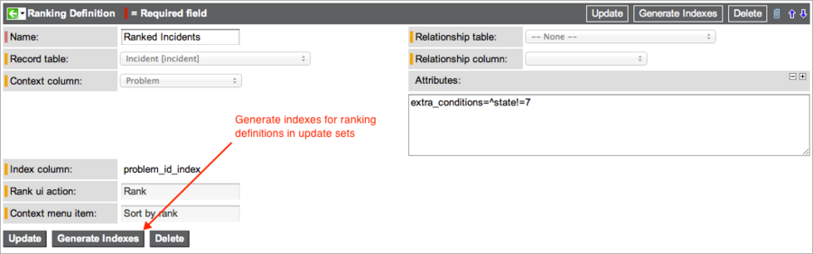

Context Ranking
| |
Note: The latest release that this documentation applies to is Fuji. For documentation on the Geneva release, see Context ranking. Documentation for later releases is also on docs.servicenow.com. |
Contents
1 Overview
Context ranking allows a user to sort a collection of records preferentially, that is, independently of the attributes of those records. For example, a Customer Support manager might organize a list of incidents in the order he wants a technician to work on the tasks. Creating such an arbitrary list with a list filter is not possible.
Context Ranking is available starting with the Calgary release.
2 Activating the Plugin
You must activate the Context Ranking plugin to use the ranking features.
| Click the plus to expand instructions for activating a plugin. |
|---|
|
If you have the admin role, use the following steps to activate the plugin.
|
3 Creating a Ranking Definition
Enable context ranking for a related list by creating a ranking definition.
- Navigate to System Definition > Ranking Definitions.
- Click New.
- Enter a Name for the ranking definition.
- In the Record table field, select the table for which ranking is enabled.
- This is the table of the records in the ranked related list. For example, to enable ranking for a related list of incidents in the Problem form, select the Incident [incident] table.
- In the Context column field, select the reference column providing the context in which ranking is to be performed.
- The context in this case is the form in which the related list appears and not a table name. For example, a related list with a Record table of Incident [incident] can have a number of contexts, including the Problem form or a Configuration item form.
- Complete the relationship-based fields if the ranking is to be performed on a related list that is defined by a relationship.
- Relationship table: select the table forming the other side of the relationship. In the case of the ranking definition for Product stories in scrum, you might use the Product Model [cmdb_model] table.
- Relationship column: select the column from the relationship table to compare with the context column. To avoid adding a related list of user stories to the Product Model [cmdb_model] table, you might use the Sys ID column, which defines a subclass of the Product Model table (cmdb_model.sys_id).
- In the Attributes field, enter attributes to change and restrict the contents of the Rank dialog box, as appropriate.
- visible_columns: a semi-colon separated list of columns to be displayed in the Rank dialog box. If not specified, the Rank dialog box uses the default view of the related list you selected in the Record table field.
- extra_conditions: an encoded query to restrict the records shown in the Rank dialog box. For example, the query extra_conditions=^state!=7 displays all incidents whose state is not Closed. If not specified, the Rank dialog box shows all records for the relationship.
- Click Submit.
- 
- ServiceNow completes these read-only fields automatically.
- Index column
- Rank ui action
- Context menu item
{kind=link}
| |
Note: After you submit a ranking definition, only the Attributes field can be edited. If additional changes are required, delete the record and create a new one with the revised settings. |
3.1 Update Sets and Context Ranking
ServiceNow does not generate indexes for ranking definitions inserted into the database by an update set. To use a ranking definition inserted by an update set, you must generate the indexes manually. To generate indexes, open the Ranking Definition form and click Generate Indexes.
4 Ranking a List
After you create a ranking definition for a table, related lists based on that table and context include options for ranking the list and displaying the list by rank.
To set the preferential order of records:
- Click the Rank button in the related list to reorder the records.
- Click and drag the move icon (
 ) to change a record's position.
) to change a record's position.
- Administrators can define which columns appear in the Rank dialog box in the Attributes field of the Ranking Definition form.
{kind=link}
{kind=link}
To apply the new sort order to the list:
- Open the context menu from the list title and select Sort by rank.
- To remove the ranking and return to the original order of the list, click the label in any column that contains data.
{kind=link}
5 Scrum Ranking Definitions
ServiceNow provides ranking definitions for user stories in the SDLC (Scrum Process) application. These ranking definitions enable scrum users with the proper roles to rank related lists of stories in the these tables:
- Product stories: Application Model [cmdb_application_product_model] table
- Release stories: Release [rm_release] table
- Sprint stories: Sprint [rm_sprint] table
Users can rank stories in the scrum planning board by priority. Story lists ranked in the planning board appear in the new order in product, release, and sprint forms. Stories ranked in one of these scrum forms changes the order in the planning board.
Story points for each story are listed in a ranked view, which is useful for prioritizing stories.
{kind=link}